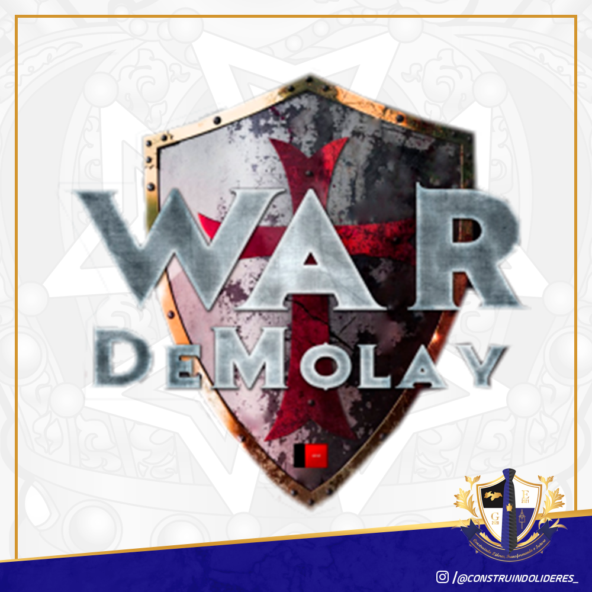

O Debatendo Sublimes, como seu título já é autoexplicativo se dará através de debates por meio de videoconferências...
A VI Edição das Olimpíadas DeMolay de Conhecimento será mais uma vez executada atráves de provas que tangem os conhecimentos gerais de nossa ordem...
Acreditamos que a Tesouraria de um Gabinete Estadual deve ter como principal característica a TRANSPARÊNCIA...
Continuaremos a realizar o projeto criado pela gestão “Inspirar Sonhos, Trabalhar Virtudes” — 2016/2017, que obteve sucesso no seu ano de estreia...
O Escudeiro Destaque, como seu título já é autoexplicativo, tem como objetivo dar destaque e premiar...
Daremos continuidade ao projeto “Carta de boas-vindas”. O projeto consiste nas confecções de cartas, em nome do Gabinete Estadual...
Importante ressaltar que a competição ocorrerá com diversos jogos, como: LOL, CS GO, Free Fire, PUBG, entre outros....
O Escudeiro Destaque, como seu título já é autoexplicativo, tem como objetivo dar destaque e premiar os Escudeiros que mais se destacarem em algumas atividades...
Iremos retornar com este projeto que foi iniciado na gestão “Viver DeMolay, Transformar vidas”...
O Projeto “Webnários DeMolay Paraíba” baseia-se na produção de Lives com diversos temas, sejam eles referente á Ordem DeMolay...
Diante da proeminência de vários Capítulos da Paraíba com dificuldades em aplicar de maneira correta e eficaz a ritualística da Ordem...
Realizado em outras gestões do Gabinete estadual, as olimpíadas são competições esportivas realizadas entre os capítulos...
O “DeMolay Nota 1000” será um projeto para ajudar os DeMolay ́s que irão fazer o ENEM ou o Vestibular...
O projeto será regido por um edital onde será definido um tema específico para este concurso...
O Projeto consiste em um concurso, na qual os participantes serão Cavaleiros Regulares, ativos ou não, do Estado da Paraíba...
O projeto do Concurso de Desenhos será regido por um edital onde será definido um tema específico para este concurso....